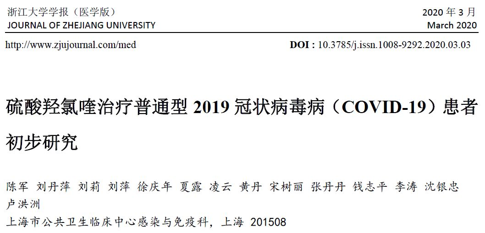
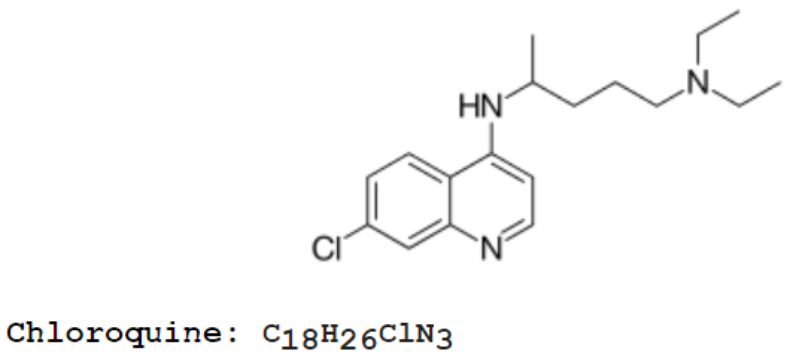

“特效药”老树开新花，艾滋病和甲流药物是新冠肺炎的救命稻草吗？
原文链接 备份链接 来源：《潜望》 作者：刘鹏 2月4日，农历立春。因新型冠状病毒而起的疫情紧迫形势下，来自中国工程院院士、国家卫健委高级别专家组成员李兰娟团队的实验结果，给出了抗击疫情的新希望。 其团队公布，有两种此前治疗甲、乙流感和艾 …

3 月 19 日，在冠状病毒专责小组新闻简报会上，美国总统特朗普宣称：“如果有一个药在欧洲、日本等其他国家被证实可以有效地抗击病毒，那么我们会用这个信息来保护美国人，这种药叫氯喹。而且这个药已经有很久的历史了，所以我们知道即便用它治不好，也不会有人死掉。如果用新药的话，你不知道会发生什么。我们将马上提供这种药物。”
特朗普还表示，他已经指示美国食品药品监督管理局（FDA）尽快地调查是否要给新冠病毒的患者服用这种只能通过处方才可获得的药物——氯喹。随后，国际制药商拜耳在其一份新闻稿中表示，该公司将向美国患者捐赠 300 万片 Resochin（磷酸氯喹）药物。另外一个力挺氯喹的名人是特斯拉 CEO 埃隆 · 马斯克（Elon Musk）。
 图 | 马斯克发推特看好氯喹对新冠病毒的治疗作用
图 | 马斯克发推特看好氯喹对新冠病毒的治疗作用
随后，FDA 专员斯蒂芬 · 哈恩（Stephen Hahn）对媒体说，FDA 目前尚未批准这两种药物治疗冠状病毒。并且强调，“目前重要的事情是不要提供虚假的希望。” 他补充说，“但是特朗普要求 FDA 要更加积极进取，发现令人兴奋的抗疫方法突破。我们正在 FDA 进行这项工作，但要客观理智看待问题。”
实际上，自新冠疫情暴发以来，中国工程院院士钟南山曾数次提到过氯喹这种药物，不过他多次强调氯喹“并非特效药”。
在 2 月 18 日，在广东省举行的疫情防控新闻发布会上，钟南山说：“磷酸氯喹够不上特效药，但有治疗效果，副作用不大，值得研究和探讨。”次日，钟南山在会后接受中央广播电视总台的专访时称，氯喹现在不是特效药，但却是一个有效药，其最重要的优势在于安全。
 图 | 3 月 18 日钟南山在广州市第 46 场疫情防控新闻通气会（来源：网络）
图 | 3 月 18 日钟南山在广州市第 46 场疫情防控新闻通气会（来源：网络）
2 月 19 日，国家卫健委发布《新型冠状病毒感染肺炎诊疗方案（试行第六版）》，将磷酸氯喹与阿比多尔纳入抗病毒治疗试用药物，并删除了“目前没有确认有效的抗新型冠状病毒治疗方法”。3 月 18 日，钟南山在新闻发布会上表示，“我们需要有一个严格的总结”，其团队试用了氯喹，大概在下星期会将内容总结好，准备发表。
那么，备受关注的氯喹到底是什么药？它真的有如此神通吗？
初步试验结果并不一致

新冠病毒肺炎临床研究中主要用到的是氯喹衍生物，包括磷酸氯喹、羟氯喹、硫酸羟氯喹。这些衍生物治疗作用与氯喹相近，但药物不良反应显著减少，吸收更快，体内分布更广。
如今已经有了细胞试验和临床试验的初步结果。
2 月初，中国科学院武汉病毒研究所与军事科学院军事医学研究院国家应急防控药物工程技术研究中心开展联合研究发现，磷酸氯喹在细胞水平上能有效抑制新冠病毒的感染，该研究发表在学术期刊《细胞研究》（Cell Research）上。
3 月 17 日，法国马赛地中海传染病研究所主任迪迪埃 · 拉乌尔（Didier Raoult）领衔的研究中，研究人员使用了羟氯喹对 20 名新冠患者进行了治疗研究。另外 16 人为对照组，来自另一个临床现场。
该试验中，20 人每日接受 600 毫克羟氯喹治疗，终点评价指标是治疗第 6 天是否依然具有病毒载量。与对照组相比，治疗组病毒性治愈的比例明显增高。研究还发现，用羟氯喹和阿奇霉素联合治疗效果更好。
不过作者也承认，其研究局限性是病例太少，且有多名患者退出了测试。另有专家批评说，该研究没有对轻重症病人分组 / 分层，不是随机研究，且对照来自其他现场，这些都影响了试验结果的客观性。
中国的一项研究给出了不一样的结论。3 月 9 日，上海市公共卫生临床中心感染与免疫科卢洪洲等人在《浙江大学学报(医学版)》发表“硫酸羟氯喹治疗普通型 2019 冠状病毒病（COVID-19）患者初步研究”。结论是：以病毒转阴率、重症化率为主要终点的研究难以对药物的疗效进行比较。也就是说，硫酸羟氯喹治疗组并没有比对照组显示更好的疗效。硫酸羟氯喹较氯喹基础上增加了一个羟基基团，药效相当而毒性较低。
该研究在 2 月 7 日注册于美国 clinicaltrials.gov 网站。收集 2020 年 2 月 6 日至 25 日在上海市公共卫生临床中心住院治疗的 30 例普通型新冠确诊患者。患者 1:1 随机分配到试验组和对照组，对照组接受常规治疗，试验组在常规治疗的基础上口服硫酸羟氯喹（400 毫克，1 次每天，疗程为 5 天）治疗。比较两组治疗第 7 天时咽拭子病毒核酸转阴率等指标。
在治疗过程中，试验组 1 例患者发展为重症。入组后第 7 天，试验组中 13 例（86.7%）和对照组中 14 例（93.3%）咽拭子病毒核酸检测为阴性（P＞0.05）。在两周的访视期内，所有受试者的咽拭子核酸检测均转为阴性。

图 | 浙江大学学报（医学版）的文章截图（来源：zjujournals）
卢洪洲在接受 DeepTech 采访时表示，他们团队已经对研究作了调整，重新试验并投稿到英文期刊。在新的投稿论文中，将前 2 天的每天 400 毫克改为每天 800 毫克（一次 400 毫克，每日两次），之后为 400 毫克每天，疗程改为 10 天到 14 天，并且对 65 岁以下患者作了分层分析，发现治疗组排毒时间缩短，显示出了硫酸羟氯喹的疗效。
据介绍，调整方案的依据是，其一，前 2 天提高用药量可快速达到稳态有效浓度，显著缩短病原体清除时间，减少复发，降低耐药，且不良反应未见明显差异。其二，患者上呼吸道部位的病毒载量明显减少时，并不意味着肺泡内没有病毒，而硫酸羟氯喹给药需要很长的周期才能达有效稳态浓度。
卢洪洲认为，如需得出硫酸羟氯喹的疗效比对照组更优或更劣的结论，至少需要 784 例受试者。如果考虑受试者脱落、剔除等因素，病例数须达到近 900 例。这对于目前的临床研究来说是一个巨大的挑战。
他在论文中提示，在重症或危重症患者中评估硫酸羟氯喹可能更具可行性，比如是否可以降低病死率。另外，如果随着时间推移，受试者的病情确实逐渐减轻，则更提示开展随机对照临床研究的重要性。如果开展单臂研究，而以历史数据作为对照，则可能得到假阳性结果。
为何是氯喹
氯喹最早用于抗疟疾，由德国拜耳实验室的科学家在 1934 年人工合成，是一种广泛应用于自身免疫性疾病的药物，兼具广谱的抗病毒作用。它能通过改变内吞体酸碱度值，抑制依赖于酸碱度的病毒复制步骤而发挥直接的抗病毒作用，在抑制登革热病毒、寨卡病毒和 HIV 等病毒复制中均有作用。也就是说，氯喹有着如阿司匹林和二甲双胍一样的 “神药” 特质，能在对多种疾病展示令人惊讶的疗效。
尽管氯喹在高剂量使用时可能具有毒性，但其普遍被认为是安全的，并且在中度剂量下耐受性良好。
罗氏制药总部（瑞士）医学总监刘挺在《中国银行保险报》撰文认为，磷酸氯喹在理论上是一个完美的抗新冠药物。
在新冠病毒感染初期，病毒在人体内大量复制，但临床症状可能表现为轻症，那么此时应当以减少病毒数量为主，支持机体免疫系统有效清除病毒，阻止病情向重症发展。一旦机体免疫系统被过度激活，释放大量炎症因子，造成了肺部组织损伤，临床症状就转成了重症，当情况进一步恶化出现呼吸和其他器官衰竭，这就是危重症了。对于重症病人，抑制病毒复制已经不是最主要治疗目标，而是控制过激的免疫系统，对症恢复器官功能。
刘挺认为，磷酸氯喹可以抑制多种病毒的感染和复制，体外实验显示可以在低浓度时抑制新冠病毒。另外它也可以治疗自身免疫疾病，调节免疫应答，抑制炎症反应。这样看来磷酸氯喹似乎是两种治疗机制的完美结合，在抑制免疫反应的同时也抑制病毒复制，避免了很多免疫抑制剂可能引起病毒复制的风险。
卢洪洲也表示，硫酸羟氯喹可以作为一个免疫抑制剂，可以抑制细胞因子风暴。
2005 年，有科学家发现氯喹可有效阻断 SARS 病毒在细胞系中的感染。这给了科学家利用氯喹抗新冠病毒的信心。目前世界各国的实验室在纷纷使用磷酸氯喹和硫酸羟氯喹进行研究测试。
图 | 氯喹的分子式（来源：Wiki）
3 月 20 日，DeepTech 在中国临床试验注册中心以 “氯喹” 为关键词搜索注册题目，得到 18 个有关新冠肺炎的在研项目结果，其中多数研究采用磷酸氯喹或硫酸羟氯喹。此外，还有 5 个氯喹项目由于各种原因已被撤销。
还有许多未知数
有多家媒体表示特朗普在缺乏更多科学证据时，就做如此表态是“惊慌之后的过度反应”，但美国一些生物技术专家纷纷表态，认为值得投入更多的资金来研究这种药物。
约翰 · 霍普金斯医学院的生物医学工程专业博士、以生命科学为重点的投资者贝利（Vas Bailey）说：“我不认为特朗普让该药物迅速地用于给患者治疗是一种对疫情感到惊慌的反应。这有可能是使用现实证据来帮助我们在此前的安全药物中，发现有哪种可能可以缓解肺炎症状，并成为治疗新型冠状病毒的潜在有效方法。”据 FDA 的表态，或许距离氯喹被批准用于 COVID-19 的治疗还有很长的路要走，因为其背后的证据还不够充分。
FDA 官员指出：目前还没有来自随机临床试验的数据，而随机临床试验是被认为能将可能的偏倚降至最低的黄金标准。也有科学家说，最大的问题之一还包括目前还没有“双盲测试”，如果医生有预先的认知判断，则可能会影响如何治疗患者的判断。这将引入难以与其他药物作用分开的干扰变量。
此外，FDA 还需要做进一步的工作来了解这种药物是否真的可以减少住院时间并降低死亡率，以及其是否会影响患者呼吸等问题。此外，关于何时、怎样，以及该向哪些患者给出该药物仍有一些未知数。
氯喹是处方药，它可能有副作用，并可能产生禁忌症。此前被发现的副作用就是“氯喹视网膜病”，当人体内累积了大量的氯喹之后将会导致永久性的视力丧失。但是，在总剂量低于 400 克（仅在治疗数年后才能达到剂量）的患者中，视网膜发生损害的情况是比较罕见的。
鉴于上述原因，世卫组织在过往的新闻发布会上的态度一贯是：目前 “没有证据” 表明该药物可有效地治疗冠状病毒。
 图 | 特朗普 3 月 19 日冠状病毒专责小组新闻简报会的直播截图（来源：WH.GOV）
图 | 特朗普 3 月 19 日冠状病毒专责小组新闻简报会的直播截图（来源：WH.GOV）
不过，总体来看，很多生物技术专家都表示：“人们有理由去乐观地认为这种药物会有所帮助。因为如果没有效果的话，人们是不会看到来自中国、韩国和法国的医疗专业人员对此进行调查的。”
在 2 月 26 日英国政府将氯喹加入了不能从英国平行出口的药品清单中。在此之前，氯喹从未出现在这个列表中。
医生们表示，很多健康的人在看到了马斯克的推文和其他消息之后，就不断地给他们打电话，要求开氯喹的药物处方。这会浪费医生治疗真正患病的人的时间，也可能意味着供应不能持续地落实在真正需要的人身上。
随着特朗普力挺氯喹，更加重了医生对此的担忧。“我认为任何抗病毒药物的库存都令人担忧。我可以想象到发生这种挤兑的情况，因为周围已经有越来越多的证据出现了。” 哈佛医学院副教授、麻省总医院内科医师奥尔森（Kristian Olson）如是说。
有一点值得肯定，氯喹药物足够便宜，且合成生产技术都比较成熟，能满足供应。
-End-
参考：
https://www.cnbc.com/2020/03/19/what-is-chloroquine-trump-and-elon-musk-have-touted-for-coronavirus.html
https://docs.google.com/document/d/e/2PACX-1vTi-g18ftNZUMRAj2SwRPodtscFio7bJ7GdNgbJAGbdfF67WuRJB3ZsidgpidB2eocFHAVjIL-7deJ7/pub
https://www.elsevier.com/__data/assets/pdf_file/0007/988648/COVID-19-Drug-Therapy_Mar-2020.pdf
https://baijiahao.baidu.com/s?id=1661506239961259728&wfr=spider&for=pc
http://finance.sina.com.cn/roll/2020-03-18/doc-iimxyqwa1421826.shtml
https://www.cnbeta.com/articles/science/957639.htm

原文链接 备份链接 来源：《潜望》 作者：刘鹏 2月4日，农历立春。因新型冠状病毒而起的疫情紧迫形势下，来自中国工程院院士、国家卫健委高级别专家组成员李兰娟团队的实验结果，给出了抗击疫情的新希望。 其团队公布，有两种此前治疗甲、乙流感和艾 …
原文链接 备份链接 3 月 19 日，《新英格兰医学杂志》（NEJM）在线发表中国团队关于抗艾滋药物洛匹那韦 / 利托那韦研究称，与常规支持治疗相比，洛匹那韦 / 利托那韦在对于新冠重症患者治疗中并未出现临床状况改善或死亡率降低。 …
原文链接 备份链接 【财新网】（实习记者 黄晏浩 记者 徐路易）新冠病毒又一项“特殊性”在自然界中找到了类似物。3月6日，一篇发表在bioRxiv预印本网站的论文称，S蛋白两个亚基S1和S2间的蛋白酶切位点有多个氨基酸插入，并非新冠病毒独 …
原文链接 备份链接 【财新网】（实习记者 曾美雅 记者 邸宁）随着大量新型冠状病毒疾病（COVID-19）临床试验相竞开展，试验质量、资源分配等问题越发引人关注。近日，上海交通大学第六人民医院朱长太团队联合多机构发文，对中国已注册临床试验 …
原文链接 备份链接 已经致7.8万多人感染、2700多人死亡的新冠病毒到底长什么模样？它又将何去何从？ 近期，世界各地病毒实验室里的“病毒猎手”们借助冷冻电镜技术，得以管窥其真容。他们给新冠病毒拍了大分子高清照片，看清楚它的分子级别的结 …